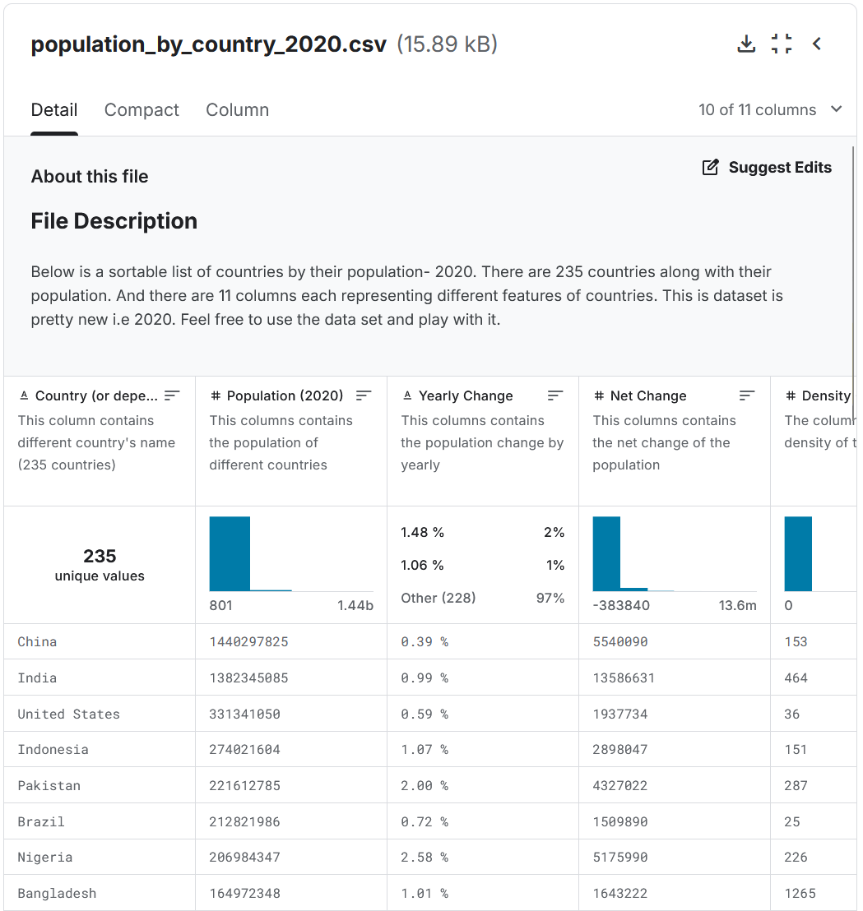
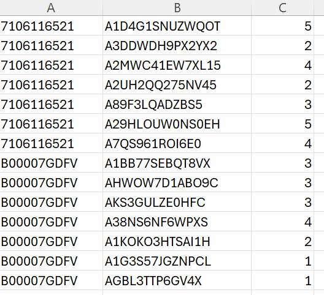

Week 3 Lab: Fundamental Graphs and Visual Encoding
CS-GY 6313 - Information Visualization
New York University
2025-09-19
Week 3 Lab Overview
| User Interface | Graphics Library | Notebook | Zoom |
|---|---|---|---|
| observablehq.com | Vega-Lite | Week 3 Lab Notebook | Zoom Meeting |
Today’s Lab Activities
- Warm up: Practice with Scenarios & Choices
- Mutli-View Composition
- Partner Activity: Chart Exploration
Recall Today’s Main Topics:
- 5 Fundamental Graphs: Bar Charts, Line Graphs, Scatter Plots, Matrix, Symbol Maps
- Principles: Expressiveness & Effectiveness
- Transformation Types: Aggregation, Filtering, Binning, Deriving, Normalization
- Domains & Scales: Linear, Log, Ordinal
(Available via the Week 3 Lab Notebook)
Part 1: Warm Up - Thinking about Design Choices (~5-10 mins)
Our Task:
- What we’re given: A data scenario & a goal in mind
- Our task: Answer, collectively, the optimal way to:
- Identify the data domains [Q, C, O, T, Spatial (S)]
- Graph the data [Bar, Line, Scatter, Matrix, Symbol]
Exercise 1
Exercise 2
- What we’re given: Population size of different countries.
- Goal: Compare country population sizes
- StrawPoll

(Source: Kaggle: Population by Country - 2020)
Exercise 3
- What we’re given: Product ratings from 1 to 5 stars collected from customer feedback.
- Goal: Show frequency of each rating.
- StrawPoll

(Source: openbigdata.org)
Exercise 4
- What we’re given: Test scores (0%-100%) of students plotted against hours studied.
- Goal: Determine the correlation between study time and performance.
- StrawPoll
Exercises - Answers
Exercise 1: Monthly Sale Revenues
- Data domains: Monthly Sales (Q) over 12 months (T/O)
- Graph: Line or Bar
Exercise 2: Population Sizes
- Data domains: Population Size (Q) by Country (S)
- Graph: Symbol Map (via GeoData)
Exercise 3: Product Ratings
- Data domains: A collection (Q) of Product Ratings (O)
- Graph: Bar Chart
Exercise 4: Test Scores
- Data domains: Test scores (Q) vs. hours studied (Q)
- Graph: Scatter Plot
Part 2: Facets and Multiple Views
Context:
In prior labs and exercises, we touched upon the idea of “facets”, or multiple views within a single chart. Facets allow us to divide visualizations based on a categorical feature as a 3rd dimension.
In this part, we’ll really get deep into generating multi-view compositions.
Concepts Covered:
- layer: place compatible charts directly on top of each other,
- facet: partition data into multiple charts, organized in rows or columns,
- concatenate: position arbitrary charts within a shared layout, and
- repeat: take a base chart specification and apply it to multiple data fields.
Largely inspired by UW Data Lab Summary: Multi-View Composition. Follow this notebook, then return here for Part 3.
Part 3: Multiple Chart Types in Vega-Lite
Documentation
We’ve already covered several plot types, but Vega-Lite provides a very wide variety of different chart types.
Changes to our Approach
- Moving away from specifying “answer” graphs
- Instead, moving more towards prompt-based questions and analysis.
Part 3 Exercises: Answering Prompts (~20-30 mins)
Your Task:
IN PAIRS OF TWO:
For each scenario prompt, take the data and attempt to generate a visualization of your choice that shows something unique about that dataset. At the end of this exercise, we will have volunteers show their graphs for each scenario and provide a narrative for what the graph is telling them.
- You are allowed to use any visualization.
- Feel free to use any filters, calculations, or multi-view compositions.
- Use the cheatsheet to help you identify optimal graphs, scales, and transformations.
- Try to avoid the common pitfalls.
- Keep it simple!
End of Lab
- Exercise #3 will be posted no later than September 20, 2025.
- Exercise #3 is due on September 25th, 2025 @ 11:59pm!
- Where do I ask questions?
- TA Office Hours:
- Physical Location: Wednesdays @ 2PM-3PM, 8th floor common area @ 370 Jay Street, Brooklyn
- Online Zoom: (https://nyu.zoom.us/j/92815268504)
- Our course Discord!
- TA Office Hours: